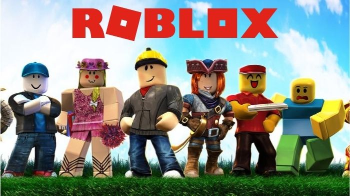
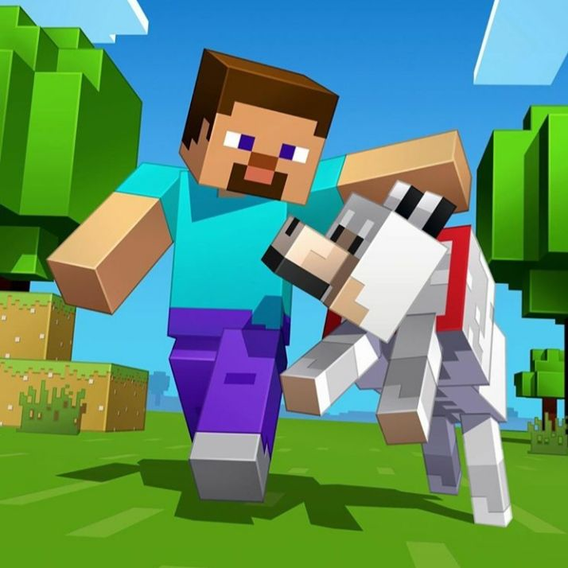
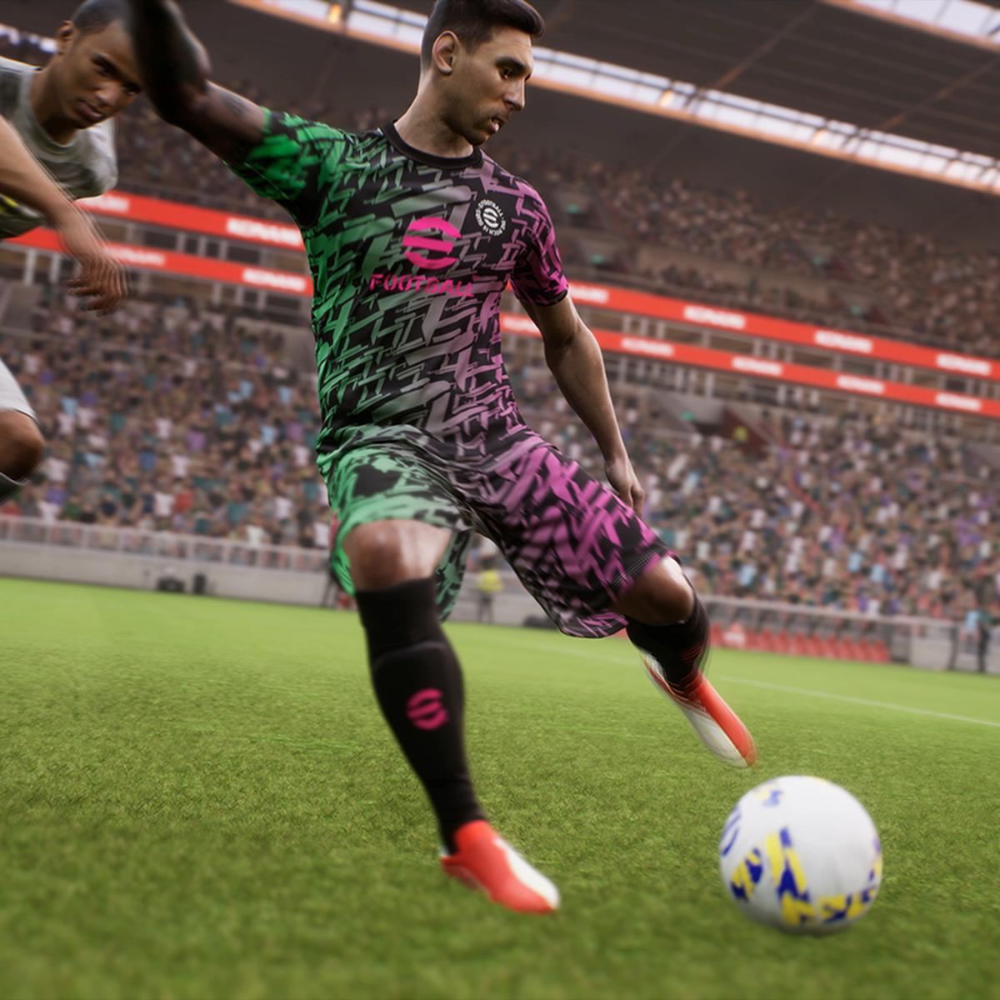

ARK SURVIVAL
O Mundo no ARK parece uma cópia do tempo dos dinossauros, mas humanos do futuro chegaram e estão adestrando as criaturas com planos de trazerem esses seres para o nosso tempo e devemos evitar que isso aconteça!

Voltando para o mundo real
Apesar de correr perigos reais, o retorno ao mundo real se faz através de um dispositivo controlado pelo meu pai chamado X BOX template. Este dispositivo faz com que exista a opção de dar restart no jogo e eu sou redirecionado ao conforto do sofá da minha casa!
Jogos que estou entrando de maneira real
- 
- 
- 
O Clube do Pedro Luís
Preciso de amigos dispostos a me ajudar a completar as missões, embarque comigo nessa jornada pelo mundo dos pixels, se você é destemido, possui raciocínio lógico bom e coragem, faça parte das novas aventuras!